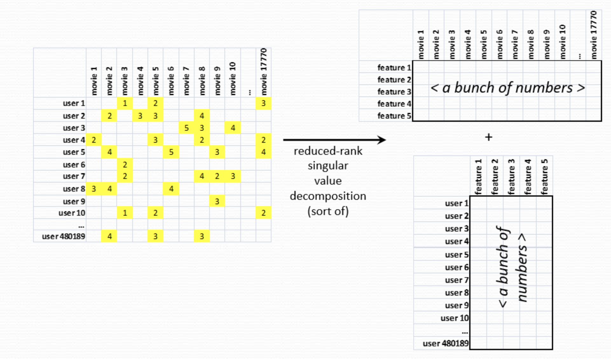

Introduction
Contents
Introduction¶
The following are based on the winning submission paper as well as their subsequent publication.
The Netflix Prize was an open competition for the best collaborative filtering algorithm to predict user ratings for films, based on previous ratings without any other information about the users or films, i.e. without the users or the films being identified except by numbers assigned for the contest.
The competition was held by Netflix, an online DVD-rental and video streaming service, and was open to anyone who is neither connected with Netflix (current and former employees, agents, close relatives of Netflix employees, etc.) nor a resident of certain blocked countries (such as Cuba or North Korea).[1] On September 21, 2009, the grand prize of US $ 1,000,000 was given to the BellKor’s Pragmatic Chaos team which bested Netflix’s own algorithm for predicting ratings by 10.06%
This competition is instructive since:
Collaborative filtering models try to capture the interactions between users and items that produce the different rating values. However, many of the observed rating values are due to effects associated with either users or items, independently of their interaction. A prime example is that typical CF data exhibit large user and item biases – i.e., systematic tendencies for some users to give higher ratings than others, and for some items to receive higher ratings than others.
Observing the posted improvements in RMSE over time, the competition has become of little business value to Netflix after a while. This means that it was unlikely that any minute improvement to RMSE (e.g. 0.1%) will translate to additional revenue.
The 10% improvement goal was a lucky number after all. Netflix had no clue as to if this was the right number when they defined the terms. Any small deviation from this number, would have made the competition either too easy or impossibly difficult.
Problem statement¶
You are given the following dataset structure (will be explained in class) shown below,

Assuming that the rating matrix A is an m x n matrix with m users (500K) and n items (17K movies), this matrix is extremely sparse - it has only 100 million ratings, the remaining 8.4 billion ratings are missing (about 99% of the possible ratings are missing, because a user typically rates only a small portion of the movies).
Given the very large data matrix it was only expected that competitors attempted to work out some form of dimensionality reductions and as it turns out this was the basis for the winning algorithm. If you recall the premise of SVD from linear algebra, it is a decomposition that can work with rectangular matrices and can result into a decomposition of the following kind:
where \(\mathbf{U}\) is a \(m \times m\) real unitary matrix, \(\mathbf{\Sigma}\) is an \(m \times n\) rectangular diagonal matrix with non-negative real numbers on the diagonal, and \(\mathbf{V}\) is a \(n \times n\) real unitary matrix. Remember that a unitary matrix \(U\) is a matrix that its conjugate transpose \(U^†\) is also its inverse - its the complex analog of the orthogonal matrix and we have by definition \(UU^†=I\).
The columns of \(U\) are eigenvectors of \(AA^T\), and the columns of \(V\) are eigenvectors of \(A^TA\). The \(r\) singular values on the diagonal of \(\Sigma\) are the square roots of the nonzero eigenvalues of both \(AA^T\) and \(A^TA\).
It is interesting to attribute the columns of these matrices with the four fundamental subspaces:
The column space of \(A\) is spanned by the first \(r\) columns of \(U\).
The left nullspace of \(A\) are the last \(m-r\) columns of \(U\).
The row space of \(A\) are the first \(r\) columns of \(V\).
The nullspace of \(A\) are the last \(n-r\) columns of V.
We can write the SVD as,
and given the span of the subspaces above we can now intuitively think what the terms \(\mathbf{p}_u = U \sqrt{\Sigma}\) and \(\mathbf{q}_i = \sqrt{\Sigma} V^†\) represent.
 SVD decomposition reveals latent features weighted by the underlying singular values of the data matrix
The first term represents the column space aka. it provides a representation of all inter-user factors (also called latent features, latent means hidden). The second term represents the row space aka. it provides a representation of all inter-movie factors. Which brings us to the major point of what the \(\sqrt{\Sigma}\) is doing to both terms. It represents the significance of those factors and therefore we can very easily use the singular values it contains to “compress” our representation by selecting the \(k\) largest singular values and ignoring the rest.
Given these vectors of factors we can now use them to predict the rating:
 *Prediction of a rating is the product between user latent features and movie latent features matrices.
*Prediction of a rating is the product between user latent features and movie latent features matrices.
For an intuitive description of the SVD solution see here.